Guided, one step at a time
Vehicle, Measure, GPS, Reference and Companion, with jump-to-step navigation along the top.
User Manual › Getting started
Getting started
A five-step wizard walks you through your machine, its measurements, your GPS and your reference system. Finished steps get a check mark, and Save unlocks only when everything is complete, so nothing gets missed.
Vehicle, Measure, GPS, Reference and Companion, with jump-to-step navigation along the top.
Choose the 3D model closest to your machine and Exodus draws it where your real antenna sits.
Bluetooth, Wi-Fi, or a built-in simulation so you can train without a receiver.
Your receiver can output WGS 84 while the project works in State Plane. Exodus converts every position as it arrives.
On this page: Home screen overview · Creating a Survey Vehicle · Measurements · Receiver reference system (CRS) · Creating a project
Everything starts from the home screen. The three rows across the top (Project, Machine, Corrections) each show the items you have already created. The + tile at the end of a row creates a new one. Tap an existing tile to make it the active one (it turns green with a check mark).
When the Project and Machine are both set, Enter Job at the bottom left opens the run screen.
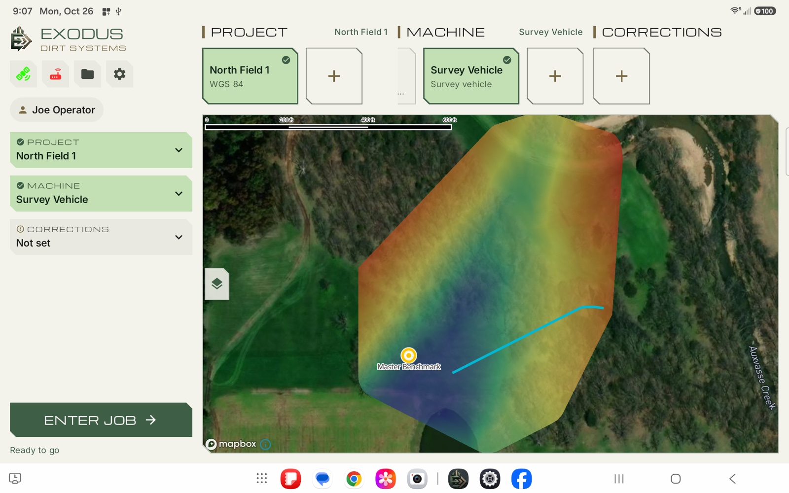
A Survey Vehicle is a machine whose only job is to measure the site: it records benchmarks, markers, lines and terrain. It has no blade or attachments. It can optionally carry a surveyor pole (rod) for shooting points on foot.
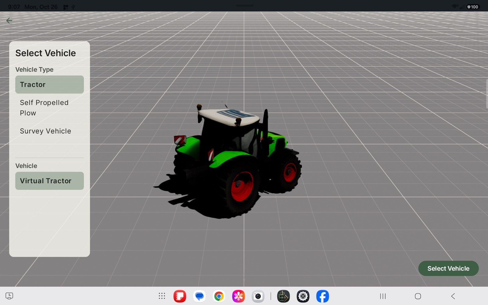
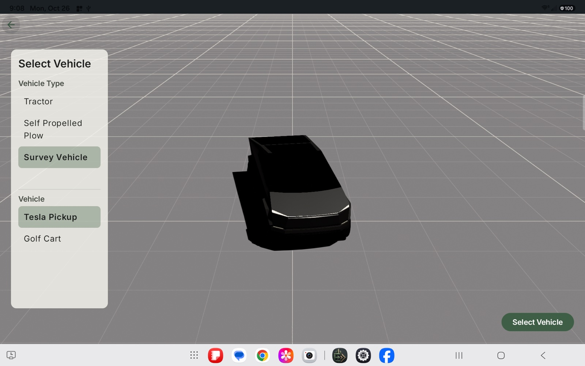
The setup wizard has five steps, shown along the top as Vehicle, Measure, GPS, Reference and Companion. Completed steps show a check mark. You can tap any step in the header to jump to it, or use Back and Next at the bottom.
Enter a Name for the machine. This is what appears on the home screen and the run screen.
Choose how the vehicle's Heading (the direction it is pointing) is worked out:
| Option | Meaning |
|---|---|
| Raw | Uses the receiver's heading exactly as reported. |
| Smoothed (recommended) | Filters the heading by fix quality and speed, so the vehicle does not jitter when it is moving slowly or the fix is poor. |
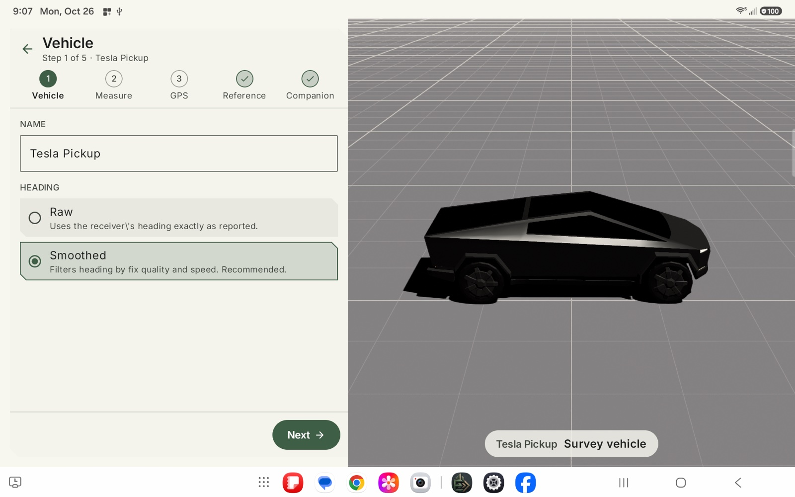
See Measurements for what each measurement means and how it is used.
Choose where the position comes from:
| Source | Use it when |
|---|---|
| Bluetooth | The receiver is paired over Bluetooth. Tap Scan and select it from the list. |
| Wi-Fi | The receiver is a network device. Scan for or type the network name and password, then enter the receiver's IP address and port. |
| Simulation | You are training, testing or demonstrating without a receiver. The run screen shows on-screen drive arrows. |
The switch Turn on differential RTK when used tells Exodus the receiver expects correction data. Advanced holds the fix-quality interpreter setting.
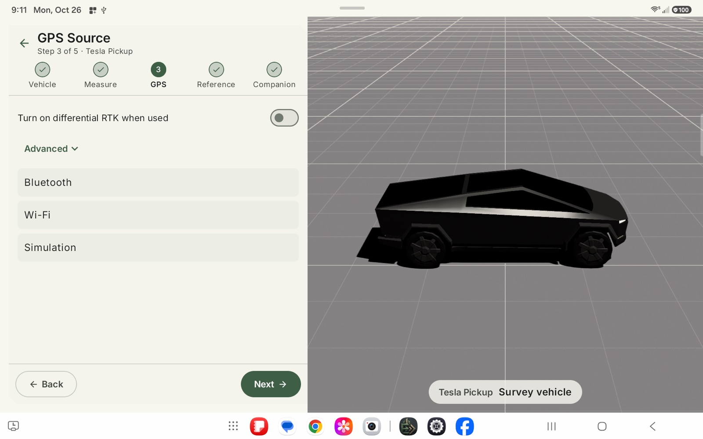
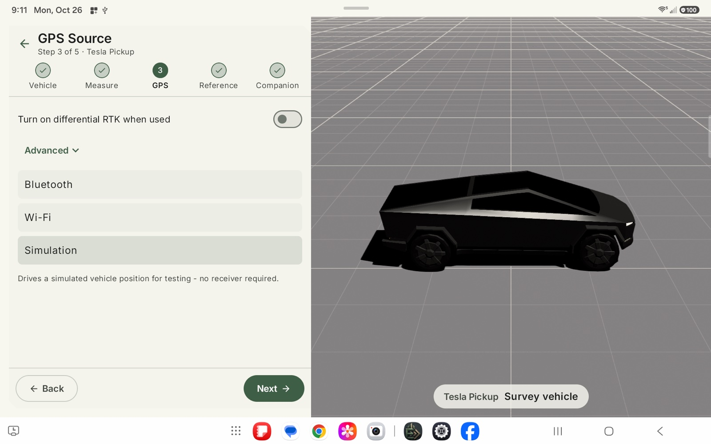
Tells Exodus which coordinate system the receiver reports in. See Receiver reference system (CRS).
Choose whether the machine carries a surveyor pole:
| Option | Meaning |
|---|---|
| Off | The receiver stays on the vehicle. |
| Surveyor pole | You can take the receiver off the vehicle to shoot feature points on a pole. You must enter the Rod height (ground tip to the antenna). |
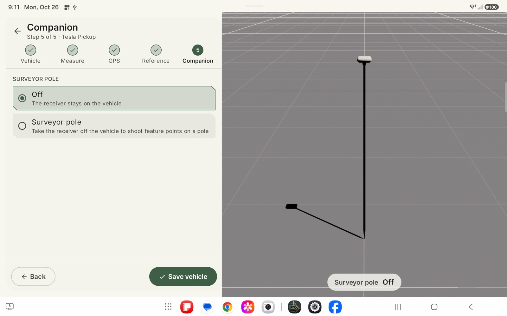
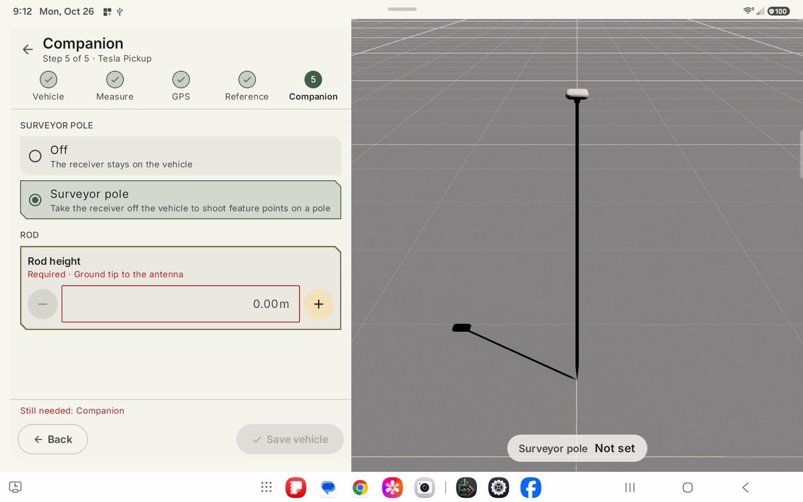
When every step has a check mark, Save vehicle becomes active. If something is missing, a red line above the buttons (for example Still needed: Companion) tells you which step to finish.
Measure the real machine with a tape and enter each value in the measurement list. Every row shows a title, a one-line description and the current value. Tap a row to edit it. Use the - and + buttons to nudge the value in small steps (the step size is shown at the bottom of the list), or type an exact value. Rows marked Required must be filled in before you can continue.
The diagram at the top has two views: Side and Top (front is to the right). It highlights the measurement you are editing, and the 3D vehicle on the right turns to show the matching side.
| Measurement | What to measure | How Exodus uses it |
|---|---|---|
| Overall length | Front to back, bumper to bumper. | Sizes the 3D model so it matches your real machine. |
| Overall width | The widest point, side to side. | Sizes the 3D model. |
| Rear axle from back | From the back of the vehicle to the rear axle. | Places the model correctly around the rear axle. The rear axle is also the starting point for the antenna fore/aft offset. |
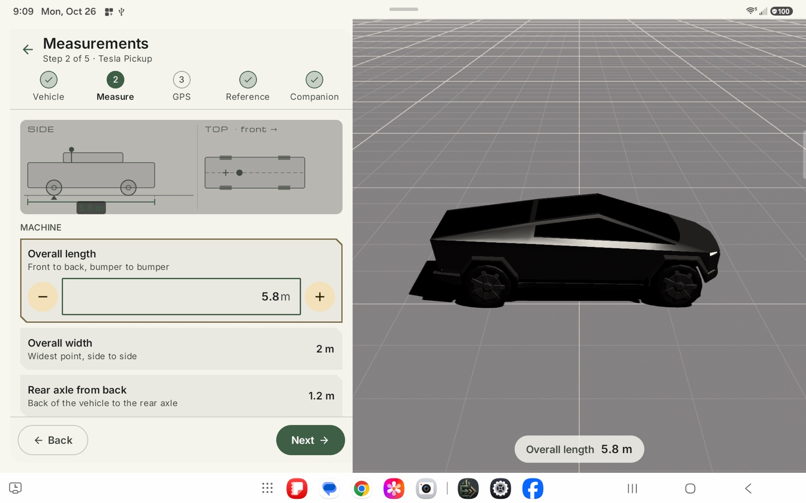
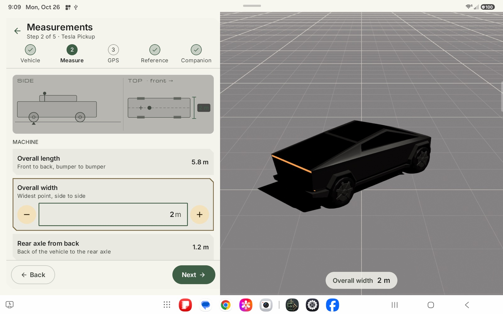
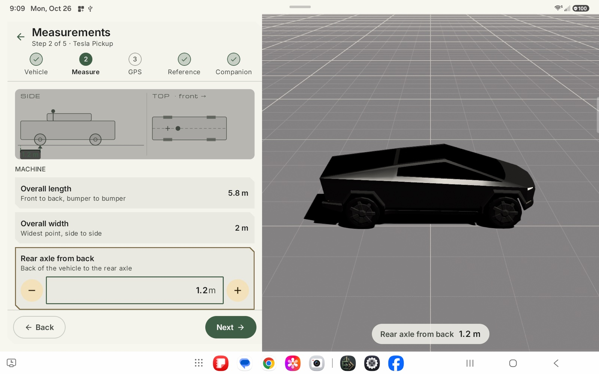
These three values tell Exodus exactly where the receiver sits on the vehicle. The position the receiver reports belongs to the antenna, not the machine, so these offsets are what let Exodus draw the vehicle in the right place.
| Measurement | What to measure | How Exodus uses it |
|---|---|---|
| Antenna height | Ground to the antenna. | Converts the antenna's reported height into the ground height beneath the vehicle. |
| Antenna fore/aft | Distance from the rear axle, forward or back. Choose Behind or Ahead. | Sets where the antenna is along the vehicle's length. |
| Antenna left/right | Distance from the vehicle's centerline. Choose Left or Right. | Sets where the antenna is across the vehicle's width. Enter 0 if it is on the centerline. |
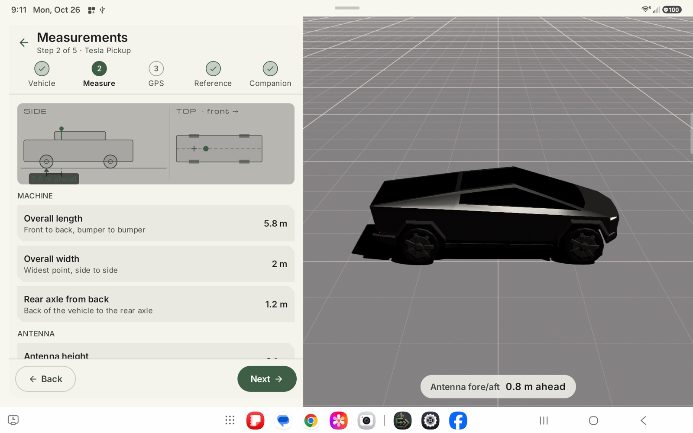
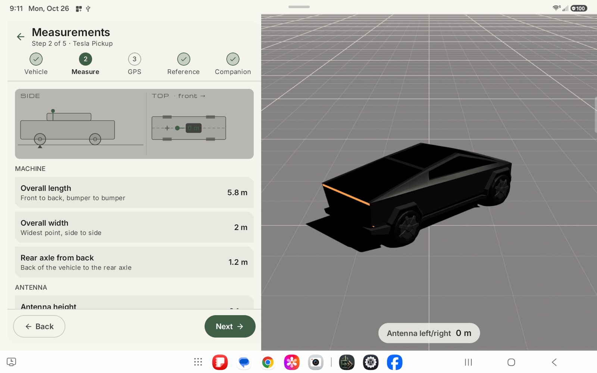
Fore/aft is measured from the rear axle, not from the back bumper. Left/right is measured from the centerline, not from the edge.
If you turned on the surveyor pole in step 5, Rod height is the distance from the ground tip to the antenna on the pole. Exodus subtracts it from the antenna height so points shot on the pole are recorded at ground level.
A CRS (coordinate reference system) says what the numbers from the receiver mean. The same spot on Earth has different coordinates in different systems, so Exodus must be told which system the receiver outputs.
This is not the project's coordinate system. It describes the receiver. The project's system is chosen separately when you create a project (see Creating a project). Exodus converts between the two.
The Reference step has two settings.
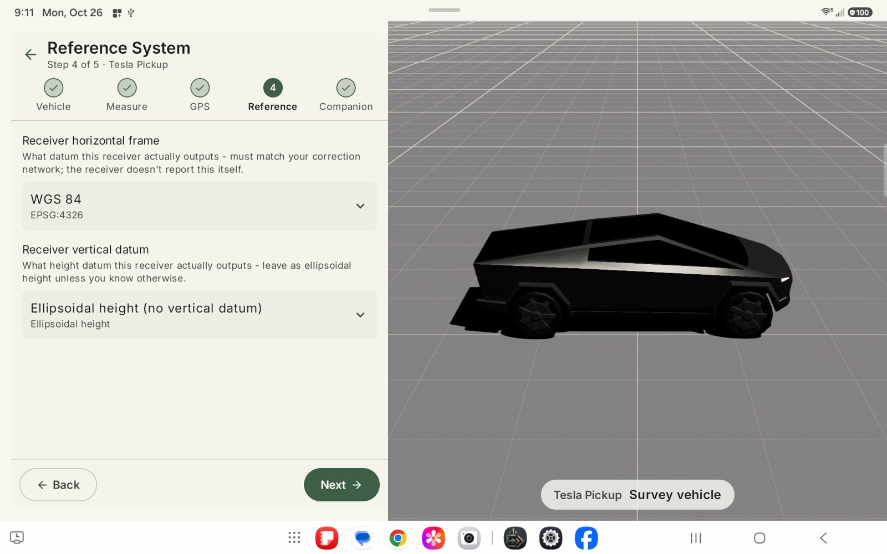
The datum the receiver actually outputs. It must match your correction network, because the receiver does not report this itself. The default is WGS 84 (EPSG:4326). Tap the field to search by name or EPSG code.
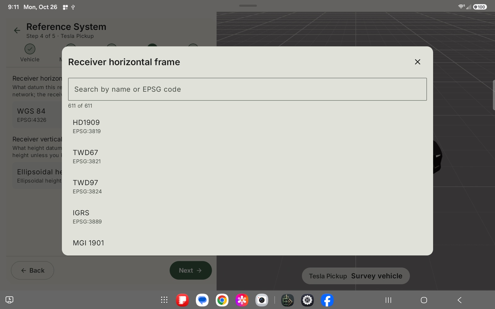
The height reference the receiver outputs. Leave this as Ellipsoidal height unless you know your receiver is configured otherwise.
Other options (for example EGM96 or EGM2008) apply a geoid model to turn ellipsoidal height into height above mean sea level. Some geoid grids are bundled with the app; the rest show Download and must be downloaded before you can select them.
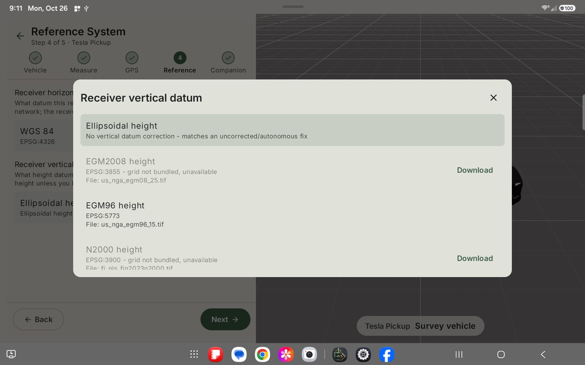
A project holds everything you survey on one site: benchmarks, markers, lines and terrain.
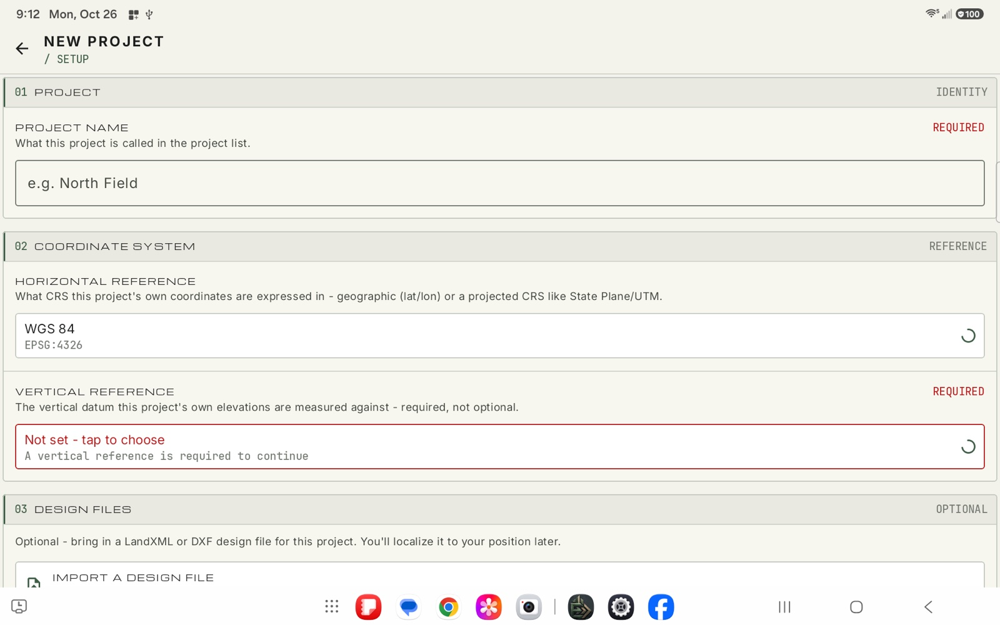
Project Name (required) is how the project appears in the project list.
These describe the project's own coordinates, which is what you see on screen and in exported data.
| Setting | Meaning |
|---|---|
| Horizontal reference | The system the project's coordinates are written in. Pick a geographic system (latitude/longitude, such as WGS 84) or a projected system such as State Plane or UTM. Tap the field to search by name or EPSG code. |
| Vertical reference (required) | The height datum the project's elevations are measured against. You must choose one before you can continue. Ellipsoidal height means raw ellipsoidal heights with no geoid applied, meaningful only relative to each other. |
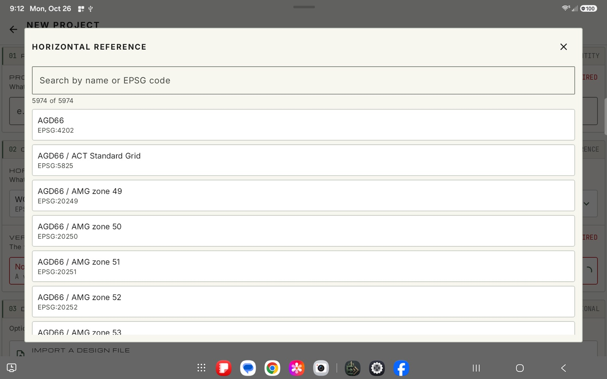
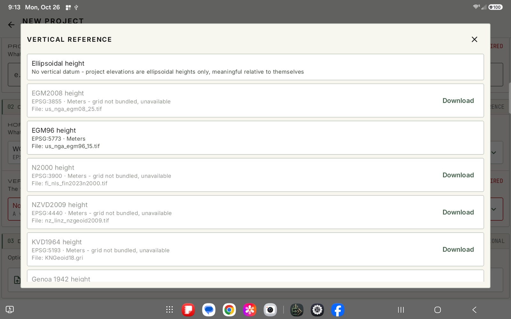
The receiver's CRS and the project's CRS are independent. For example, a receiver can output WGS 84 while the project works in a State Plane zone. Exodus converts each position as it arrives.
You can import a LandXML (.xml / .landxml) or DXF (.dxf) design file now. Localizing it to your position is done later.
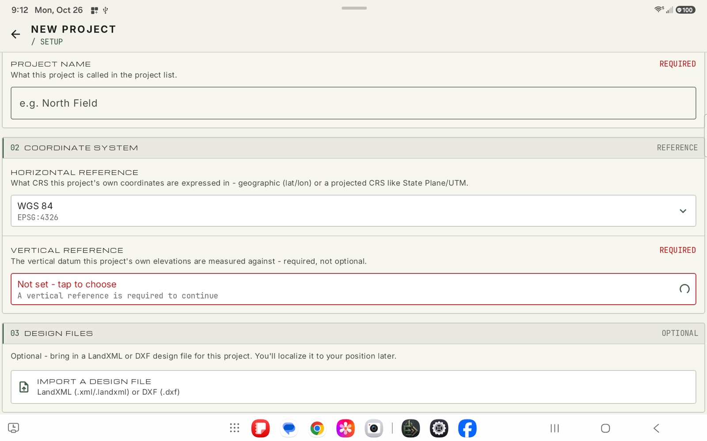
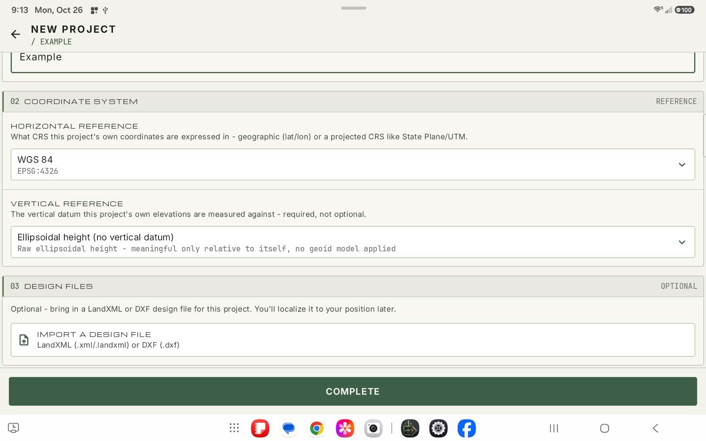